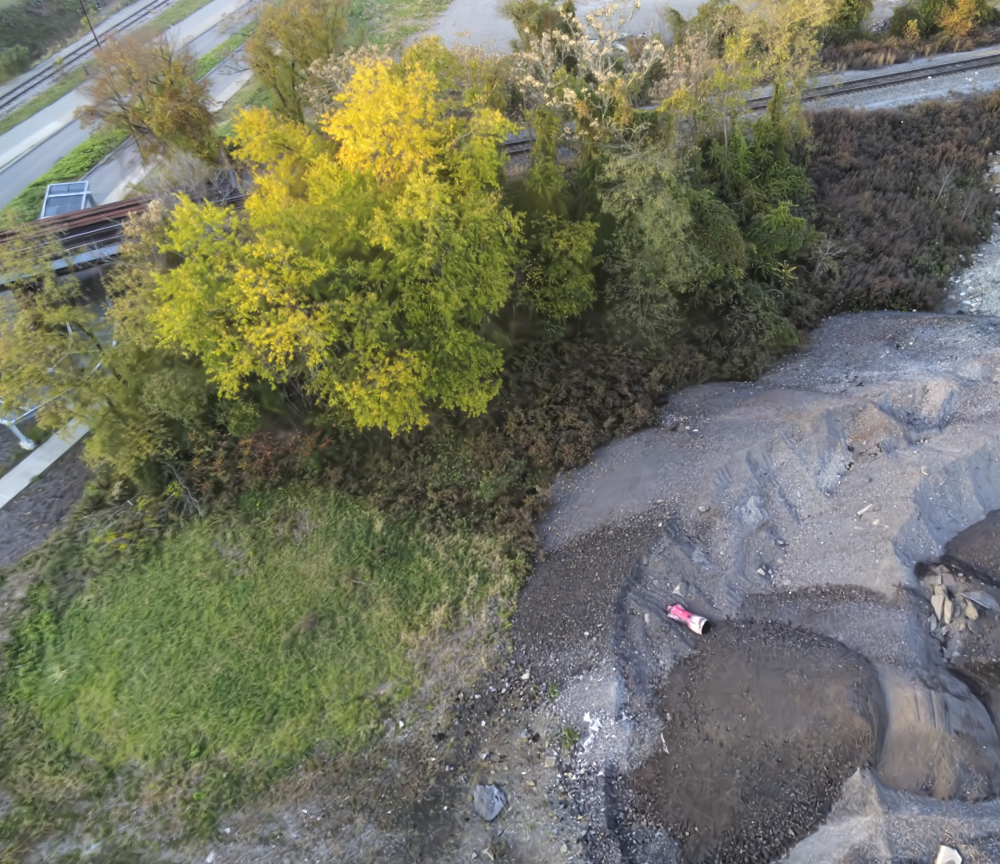
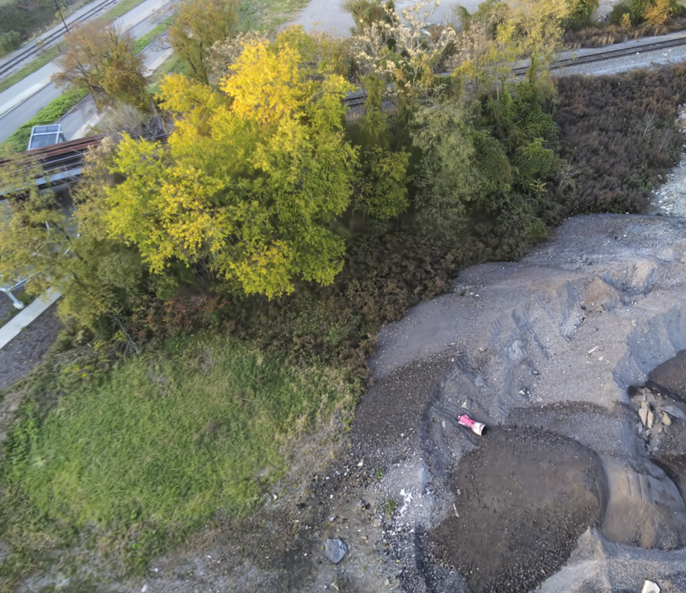

CityGS
With the support of LoD, our CityGS can be rendered in real-time under vastly different scales. The average speed is 36 FPS.
The advancement of real-time 3D scene reconstruction and novel view synthesis has been significantly propelled by 3D Gaussian Splatting (3DGS). However, effectively training large-scale 3DGS and rendering it in real-time across various scales remains challenging. This paper introduces CityGaussian (CityGS), which employs a novel divide-and-conquer training approach and Level-of-Detail (LoD) strategy for efficient large-scale 3DGS training and rendering. Specifically, the global scene prior and adaptive training data selection enables efficient training and seamless fusion. Based on fused Gaussian primitives, we generate different detail levels through compression, and realize fast rendering across various scales through the proposed block-wise detail levels selection and aggregation strategy. Extensive experimental results on large-scale scenes demonstrate that our approach attains state-of-the-art rendering quality, enabling consistent real-time rendering of large-scale scenes across vastly different scales.

Without our proposed LoD technique, the MatrixCity is depicted by 25 million Gaussians. The consequent speed of 18 FPS leads to unpleasant roaming experience.
With the support of LoD, our CityGS can be rendered in real-time under vastly different scales. The average speed is 36 FPS.
 



@article{park2021nerfies,
author = {Park, Keunhong and Sinha, Utkarsh and Barron, Jonathan T. and Bouaziz, Sofien and Goldman, Dan B and Seitz, Steven M. and Martin-Brualla, Ricardo},
title = {Nerfies: Deformable Neural Radiance Fields},
journal = {ICCV},
year = {2021},
}[Turki 2022] Turki, H., Ramanan, D., Satyanarayanan, M.: Mega-nerf: Scalable construction of large-scale nerfs for virtual fly-throughs. In: Proceedings of the IEEE/CVF Conference on Computer Vision and Pattern Recognition. pp. 12922–12931 (2022)
[Zhenxing 2022] Zhenxing, M., Xu, D.: Switch-nerf: Learning scene decomposition with mixture of experts for large-scale neural radiance fields. In: The Eleventh International Conference on Learning Representations (2022)
[Yuqi 2023] Zhang, Y., Chen, G., Cui, S.: Efficient large-scale scene representation with a hybrid of high-resolution grid and plane features. arXiv preprint arXiv:2303.03003 (2023)
[Bernhard 2023] Kerbl, B., Kopanas, G., Leimkühler, T., Drettakis, G.: 3d gaussian splatting for real-time radiance field rendering. ACM Transactions on Graphics 42(4) (2023)